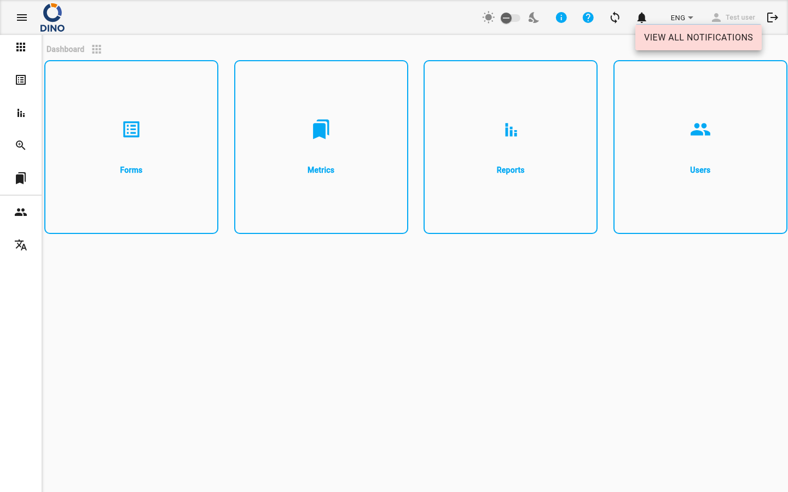
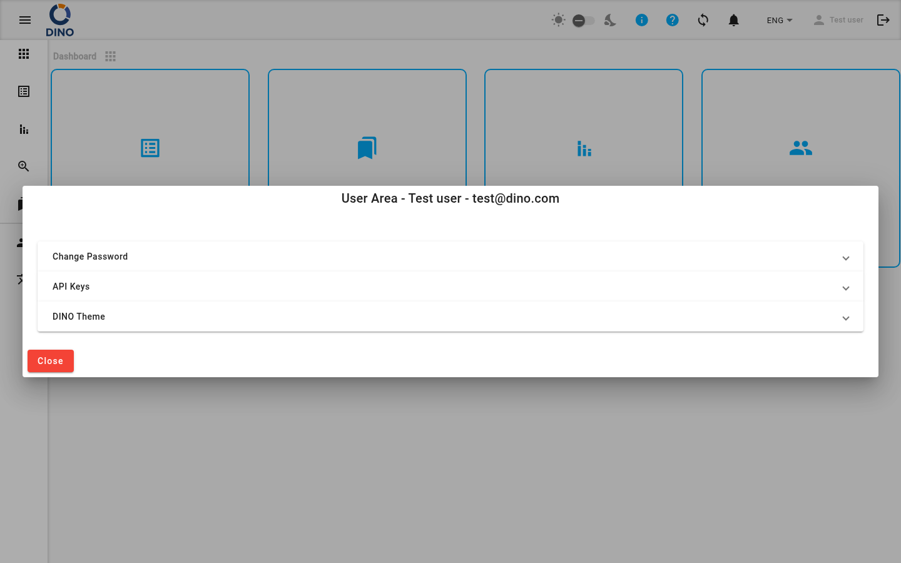

Навігація та інтерфейс
Інтерфейс Dino складається з верхньої панелі інструментів і бічного меню навігації, які присутні на кожній сторінці після входу.

Бічна навігація
Бічне меню дозволяє перемикатися між основними розділами додатку.
Стандартні розділи (доступні всім автентифікованим користувачам):
| Розділ | Опис |
|---|---|
| Панель керування | Головний екран. |
| Форми | Форми збору даних та подання. |
| Звіти | Згенеровані звіти. |
| Агрегація | Узагальнений перегляд подань з кількох форм. |
| Метрики | Довідкові дані (проєкти, місцезнаходження, організації тощо). (Приховано для користувачів-гостей.) |
| GPT | ШІ-асистент (DinoGPT). |
Адміністративні розділи (доступні лише адміністраторам, показані під роздільником):
| Розділ | Опис |
|---|---|
| Користувачі | Облікові записи користувачів та групи дозволів. |
| Мови | Керування перекладами інтерфейсу. |
На великих екранах меню завжди видно зліва. На маленьких екранах воно згортається і відкривається за допомогою кнопки меню (значок гамбургера) у верхній панелі інструментів. На екранах будь-якого розміру натисніть кнопку меню, щоб розгорнути позначки меню або згорнути їх до іконок.
Верхня панель інструментів
Панель інструментів у верхній частині екрана містить наступні елементи керування (зліва направо):
- Перемикач меню — відкрити або згорнути бічне меню.
- Логотип — відображає логотип вашої організації.
- Індикатор нової версії — значок завантаження з'являється, коли доступна нова версія Dino. Натисніть, щоб перезавантажити додаток і застосувати оновлення.
- Кредити DINO-AI — показує ваш поточний баланс кредитів ШІ у вигляді бейджа. Натисніть, щоб відкрити Область користувача на панелі кредитів. (Відображається лише якщо налаштовано ключ API DINO-AI.)
- Перемикач темної/світлої теми — значок сонця, повзунок і значок місяця. Використовуйте повзунок для перемикання між світлою та темною темами. (Приховано на мобільних пристроях — використовуйте Область користувача.)
- Значок інформації — наведіть курсор, щоб побачити інформацію про версію цієї інсталяції.
- Значок довідки — відкриває навчальний плейлист Dino в новій вкладці.
- Значок налаштувань — відкриває Область користувача.
- Значок синхронізації — показує поточний стан синхронізації даних. Натисніть, щоб виконати ручну синхронізацію.
- Дзвіночок сповіщень — показує кількість непрочитаних сповіщень у вигляді бейджа. Дзвіночок дзвенить, коли надходять нові сповіщення. Див. Сповіщення нижче.
- Вибір мови — перемикання мови інтерфейсу.
- Ім'я користувача — натисніть, щоб відкрити Область користувача.
- Значок виходу — натисніть, щоб вийти. Значок тьмяніє під час синхронізації або коли пристрій офлайн; вихід недоступний у цих станах.
Синхронізація даних
Dino синхронізує ваші дані з сервером у фоновому режимі. Значок синхронізації на панелі інструментів показує поточний стан:
| Значок | Значення |
|---|---|
sync (статичний) |
Усі дані актуальні. |
sync_problem (пульсує) |
У вас є локальні зміни, які ще не синхронізовані. Натисніть, щоб запустити синхронізацію. |
sync (обертається) |
Синхронізація виконується. |
sync_disabled |
Пристрій офлайн; синхронізація недоступна. |
sync з бейджем ! |
Виявлено проблему синхронізації. Перевірте сповіщення для отримання деталей. |
Після завершення синхронізації внизу екрана на короткий час з'являється сповіщення:
- "Синхронізацію завершено" — усі дані синхронізовано успішно.
- "Синхронізацію завершено з помилками. Не вдалося синхронізувати: [елементи]. Перевірте сповіщення." — один або кілька зборів даних не вдалося синхронізувати. Також створюється сповіщення у списку сповіщень.
Сповіщення
Натисніть значок дзвіночка на панелі інструментів, щоб відкрити спадне меню сповіщень. Бейдж на дзвіночку показує кількість непрочитаних повідомлень.

У спадному меню ви можете:
- Натиснути на сповіщення, щоб позначити його як прочитане.
- Натиснути кнопку зі стрілкою на сповіщенні (якщо вона є), щоб перейти безпосередньо до відповідного розділу додатку.
- Позначити всі як прочитані — позначає всі поточні сповіщення як прочитані.
- Переглянути всі сповіщення — переходить на повну сторінку Сповіщення.
Область користувача
Натисніть значок налаштувань, своє ім'я користувача або лічильник кредитів DINO-AI, щоб відкрити діалог області користувача. У верхній частині відображаються ваше повне ім'я та адреса електронної пошти.

Зміна пароля
- Введіть Поточний пароль.
- Введіть Новий пароль.
- Підтвердьте новий пароль.
- Натисніть кнопку зі стрілкою, щоб зберегти.
З'явиться повідомлення про помилку, якщо поточний пароль неправильний або нові паролі не збігаються.
Ключі API
Перегляньте або встановіть ключ API DINO-AI. Після збереження дійсного ключа він відображається в режимі лише для читання. Використовуйте значок ока, щоб показати або приховати ключ, та значок копіювання, щоб скопіювати його в буфер обміну.
Кредити
Показує ваш поточний баланс кредитів DINO-AI. Якщо налаштовано платіжну інтеграцію, доступна кнопка Додати ще для придбання додаткових кредитів.
Видимість
Цей розділ відображається лише тоді, коли налаштовано ключ API DINO-AI.
Тема DINO
Налаштуйте кольорову схему додатку:
- Основний колір, Акцентний колір, Колір попередження — натисніть поля кольорів, щоб відкрити палітру кольорів.
- Назва пресету — введіть або виберіть назву, щоб зберегти або завантажити колірний пресет.
- Натисніть Зберегти, щоб зберегти поточні кольори як іменований пресет, або Завантажити, щоб застосувати збережений пресет.
На мобільних пристроях тут також з'являється перемикач темної/світлої теми.
Навчальні матеріали
Натисніть Розпочати тур Dino, щоб перезапустити ознайомлювальний тур додатком з початку.
Доступність
Цей розділ відображається лише якщо ознайомлювальний тур налаштовано у вашій інсталяції.
Резервне копіювання та відновлення
(Тільки для адміністраторів, якщо ввімкнено.)
- Резервне копіювання даних — завантажує повний експорт бази даних додатку у файл JSON.
- Відновлення даних — завантажує раніше експортований файл JSON для відновлення бази даних.
Обережність при відновленні
Відновлення даних замінить поточну базу даних. Цю дію не можна скасувати.